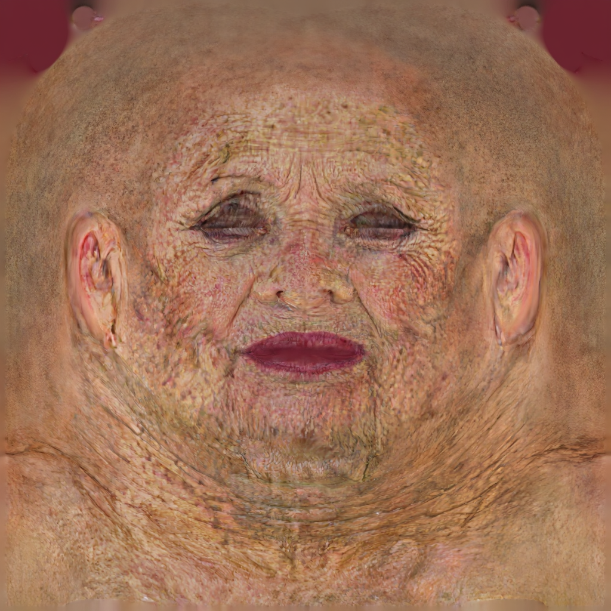
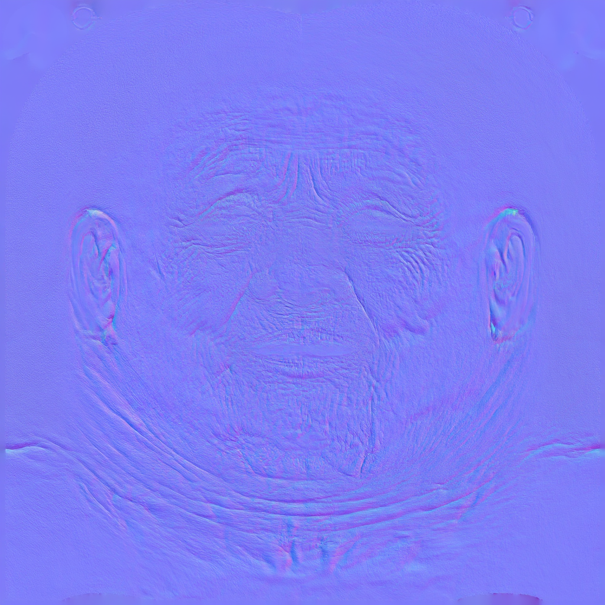
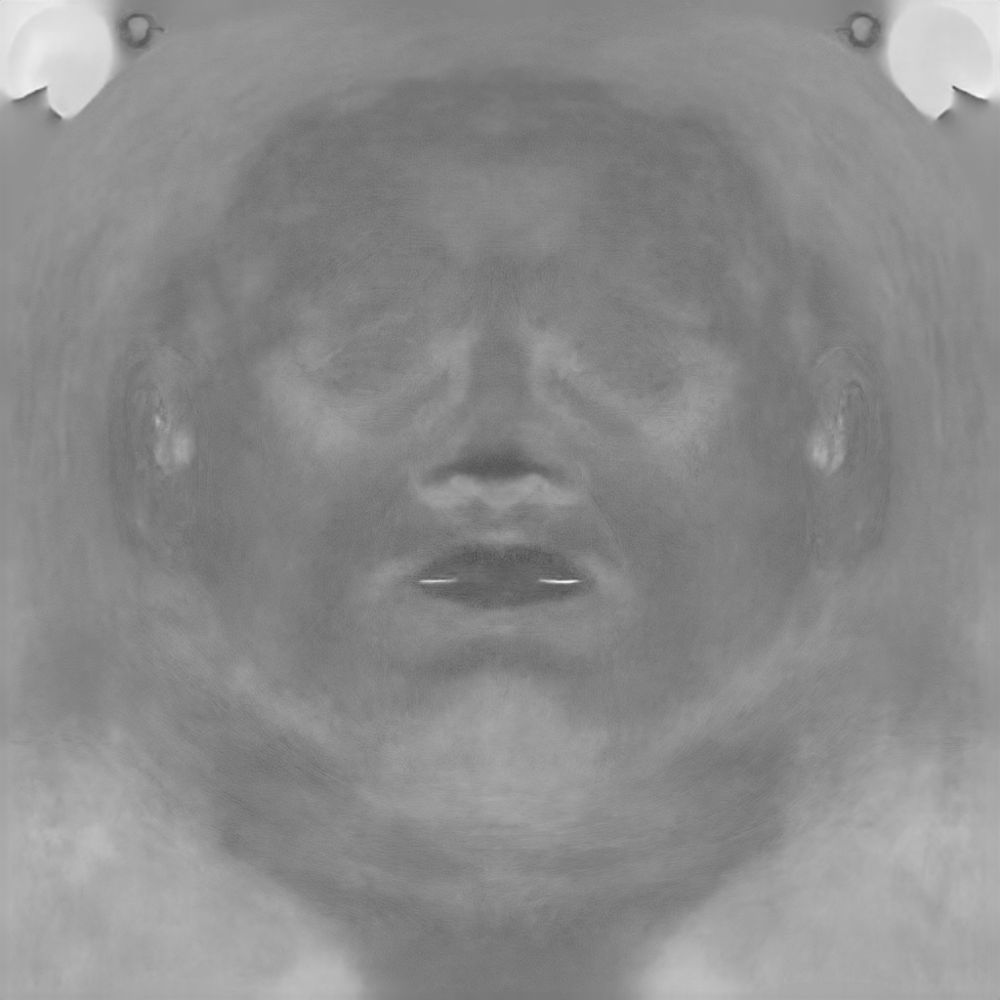
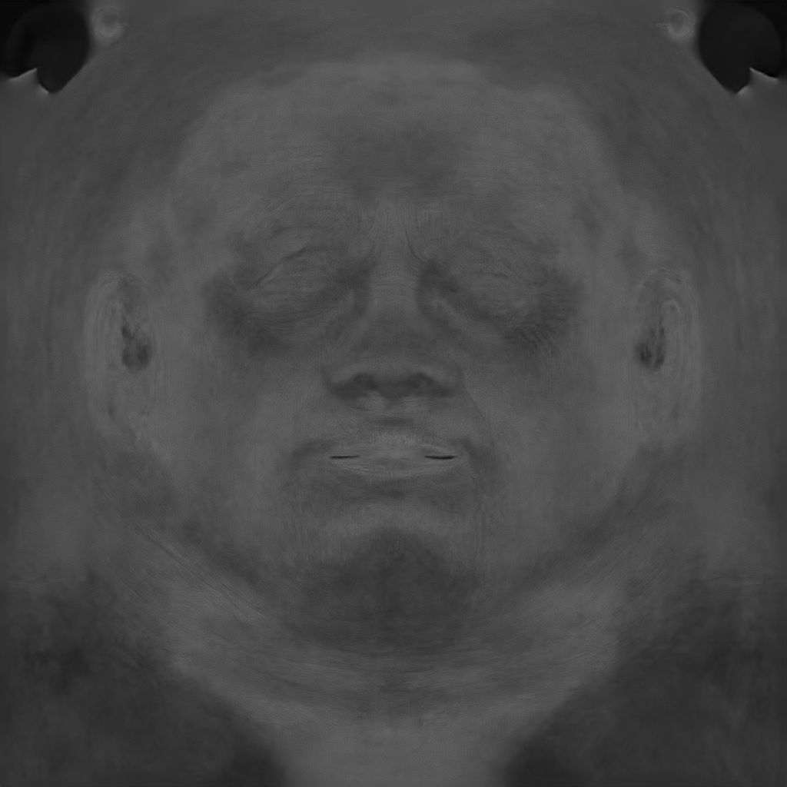
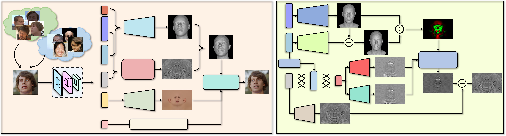
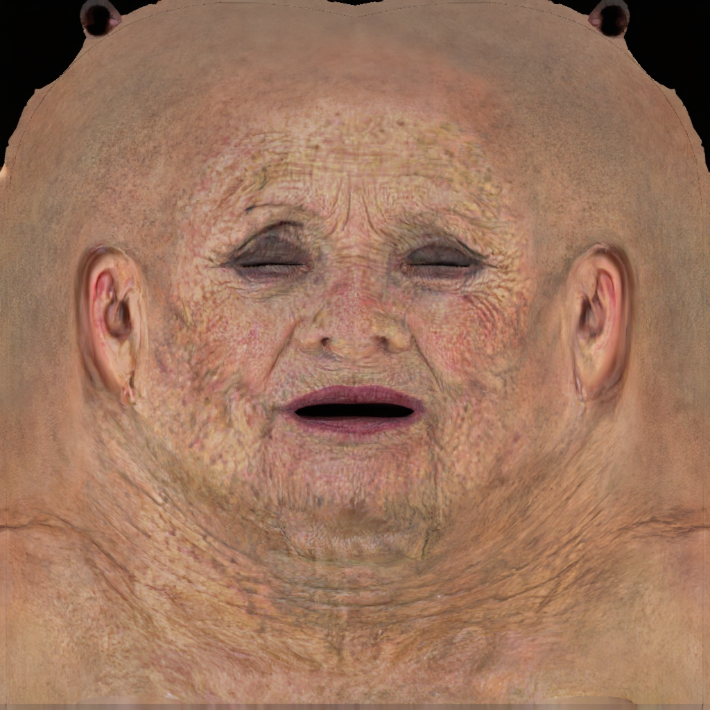
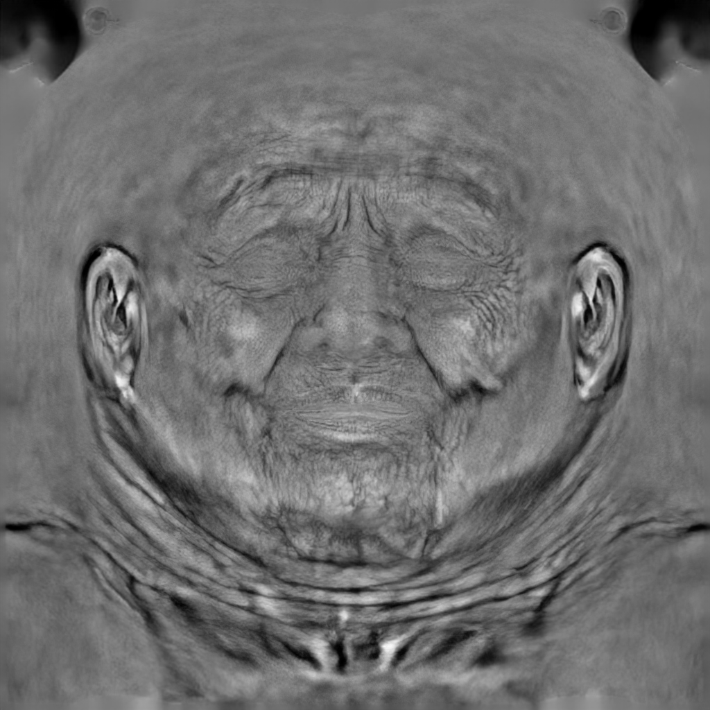
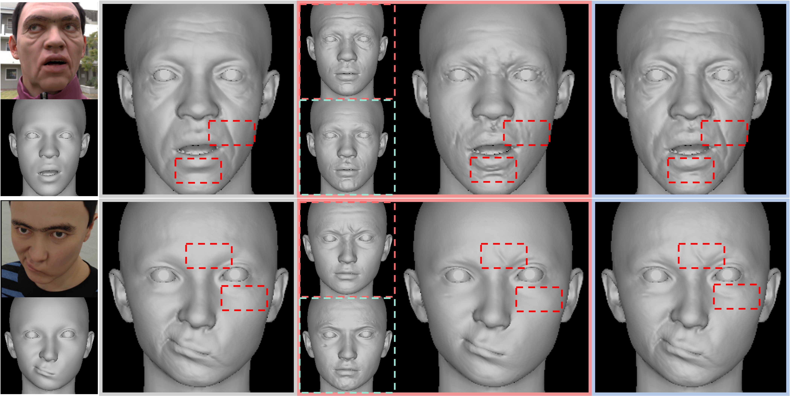
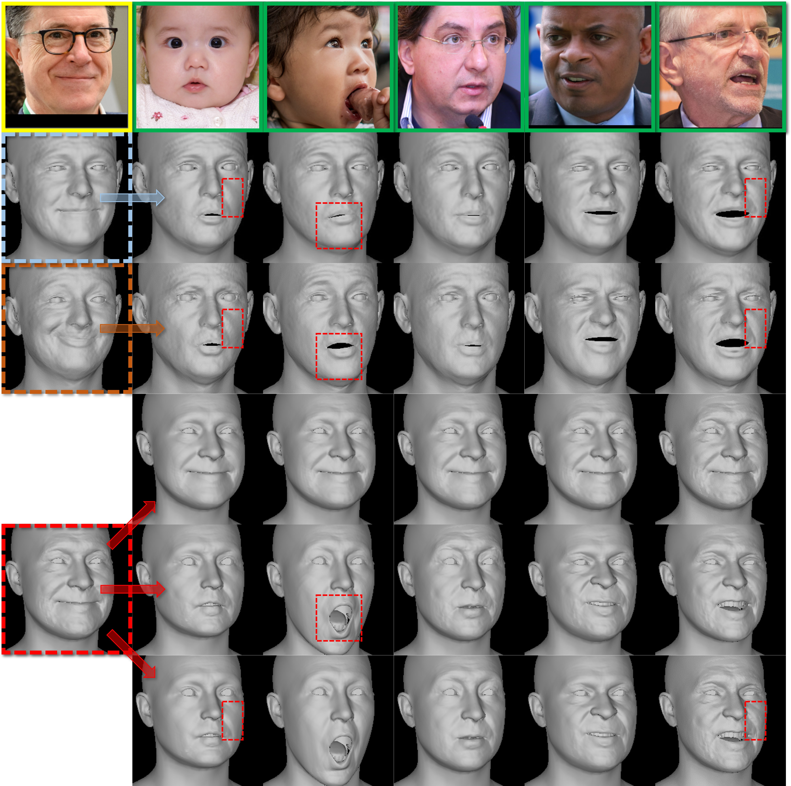

From casual portrait to aligned UV space
The pipeline first stabilizes geometry and UV correspondence, turning an unconstrained monocular image into a texture canvas suitable for high-frequency material synthesis.
ECCV 2026
MARCUS-Avatar reconstructs high-fidelity, relightable 3D avatars from a single in-the-wild image, producing UV-space PBR intrinsic materials for modern rendering workflows.




The pipeline first stabilizes geometry and UV correspondence, turning an unconstrained monocular image into a texture canvas suitable for high-frequency material synthesis.
Lightweight LoRA adapters specialize a shared generative backbone for texture completion, light homogenization, and intrinsic material decomposition.
A physically grounded shading objective keeps the generated maps coherent across albedo, normal, roughness, specular, and displacement.
Pipeline
MARCUS-Avatar avoids fragmented per-task models by cascading diffusion priors in UV space, then tying material predictions together through differentiable shading constraints.

Interactive Results

PBR Intrinsics

Generalization
The reconstructed assets preserve facial detail in UV space and support downstream relighting, inspection, and material editing.


Citation
@inproceedings{marcusavatar2026,
title = {Monocular Avatar Reconstruction via Cascaded Diffusion Priors and UV-Space Differentiable Shading},
author = {Anonymous Authors},
booktitle = {European Conference on Computer Vision},
year = {2026}
}